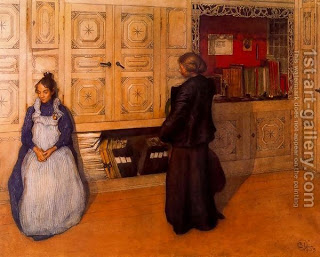

Bava Batra 130 - Power to Change Allocations in the Inheritance

If one says, "Let so-and-so inherit me," where there is a daughter who will survive him, or if he says "Let my daughter inherit me," where there is a son who will survive him - he has said nothing, that is, his words are not effective, since he made a stipulation contrary to what is written in the Torah.
However, if he increased the portion of one son among the other sons, or one daughter among the other daughters, or completely eliminated the portion of one son, leaving everything for the other sons, his words stand. Thus, one can change the the portion of whose who are in the same order of inheritance. This ruling contradicts the one cited earlier ; indeed, it is the opinion of Rabbi Yochanan ben Berokah and is the one accepted in practice.
Art: Carl Larsson - Mother And Daughter